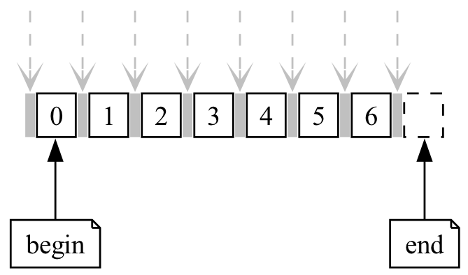
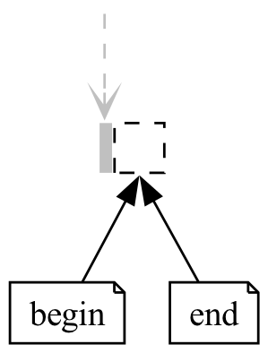

范围、迭代器和算法 (range, iterator and algorithm)#
范围 (range)#
在 C 风格数组: T array[size] (C-style array) 中, 我留下了这样一段代码:
1void print(int const* begin, int const* end) {
2 for (auto iter = begin; iter != end; ++iter) {
3 std::cout << *iter << ' ';
4 }
5 std::cout << '\n';
6}
7
8int main() {
9 int array[5] = {0, 1, 2, 3, 4};
10 print(array + 1, array + 3); // 输出 1 2
11 print(array + 2, array + 5); // 输出 2 3 4
12}
可以发现, 我们完全可以传入数组的一个子部分, 单独对那个部分进行操作. 这样由一个 起始点 和一个 结束点 描述的一部分 (一系列值的集合), 称为范围 (range).
在 C++ 中, 范围通常用半开区间 [begin, end) 表示, 例如 print(array + 1, array + 3) 即是传入范围 [array + 1, array + 3).
begin指向范围中第一个元素.
end指向范围中最后一个元素之后一个位置.

我们可以用标准库里的函数, 让范围的传入更加直观:
1#include <iterator>
2using namespace std;
3
4int main() {
5 int array[5] = {0, 1, 2, 3, 4};
6 print(begin(array), end(array)); // 输出 0 1 2 3 4
7 print(begin(array) + 2, begin(array) + 4); // 输出 2 3
8 print(begin(array) + 2, end(array) - 1); // 输出 2 3
9}
迭代器 (iterator)#
概念 (concept)#
让我们分析一下我们是如何对范围进行访问的:
1void print(int const* begin, int const* end) {
2 for (auto iter = begin; iter != end; ++iter) {
3 std::cout << *iter << ' ';
4 }
5 std::cout << '\n';
6}
我们通过传入首指针和逾尾指针, 确定要访问的范围为
[begin, end).在函数内, 我们用指针遍历:
通过拷贝进行传参和
auto iter = begin, 我们得到指向同一个元素的指针.通过相等性比较
iter != end, 我们判断是否已经遍历到范围外.通过解引用操作
*iter, 我们访问指针指向的当前元素.通过自增操作
++iter, 我们获得下一个元素的指针.
那么, 如果我们自定义一个类型, 它包装一个指针从而支持所有这些操作, 将会怎么样?
首先, 我们让这个自定义类型 Iter 存储一个指针:
1class Iter {
2 public:
3 Iter(int const* pointer) : pointer_(pointer) {}
4
5 private:
6 int const* pointer_;
7};
然后, 我们使用运算符重载让 Iter 支持上面所说的所有操作.
- 支持拷贝
1// Iter(Iter const&); // 隐式生成的拷贝函数即可满足需要
- 支持相等性比较
1friend bool operator==(Iter const& lhs, Iter const& rhs) { 2 return lhs.pointer_ == rhs.pointer_; 3} 4 5friend bool operator!=(Iter const& lhs, Iter const& rhs) { 6 return !(lhs == rhs); 7}
- 支持解引用
1int const& operator*() const { 2 return *pointer_; 3}
- 支持自增操作
1Iter& operator++() { 2 ++pointer_; 3 return *this; 4}
故迭代器 Iter 的定义如下:
1class Iter {
2 public:
3 Iter(int const* pointer) : pointer_(pointer) {}
4 // Iter(Iter const&); // 隐式生成的拷贝函数即可满足需要
5
6 friend bool operator==(Iter const& lhs, Iter const& rhs) {
7 return lhs.pointer_ == rhs.pointer_;
8 }
9
10 friend bool operator!=(Iter const& lhs, Iter const& rhs) {
11 return !(lhs == rhs);
12 }
13
14 int const& operator*() const {
15 return *pointer_;
16 }
17
18 Iter& operator++() {
19 ++pointer_;
20 return *this;
21 }
22
23 private:
24 int const* pointer_;
25};
自然地, 这个类型也可以用于范围的访问:
1void print(Iter begin, Iter end) {
2 for (auto iter = begin; iter != end; ++iter) {
3 std::cout << *iter << ' ';
4 }
5 std::cout << '\n';
6}
7
8int main() {
9 int array[5] = {0, 1, 2, 3, 4};
10 print(Iter(array + 1), Iter(array + 3));
11}
好吧, 指针和 Iter 都支持这些操作……等等, 是不是有一种称为模板的特性, 可以为 支持函数中所有操作的类型 生成对应的函数?
1template <typename Iter>
2void print(Iter begin, Iter end) {
3 for (auto iter = begin; iter != end; ++iter) {
4 std::cout << *iter << ' ';
5 }
6 std::cout << '\n';
7}
8
9int main() {
10 int array[5] = {0, 1, 2, 3, 4};
11 print(array + 1, array + 3); // 可以!
12 print(begin(array) + 1, begin(array) + 3); // 可以!
13 print(Iter(array + 1), Iter(array + 3)); // 可以!
14}
如此, 我们从指针类型中抽象出了一个概念 (concept)——迭代器 (iterator).
一个类型只要支持迭代器概念的语义和操作, 我们就说它建模了 (models) 迭代器概念. 具体地, 对于 Iter 类型的对象 i 和 j:
可以进行拷贝得到指向同一个元素的迭代器.
可以进行相等比较
i == j和i != j.可以进行解引用操作
*i和i->member.可以进行自增操作, 其中
++i应该返回自己的引用, 而i++的返回值不作要求.
单向链表的迭代器#
请不要被标题吓到, 我们在这里并不会探究链表的全部.
一个单向链表由多个结点 Node 组成. 每个结点存储有值, 并能够找到下一个结点; 如果没有下一个结点, 则 next 为空指针 nullptr.
1struct Node {
2 public:
3 int value; // 当前结点的值
4 Node* next; // 指向下一个结点的指针
5};
以下代码即构成了一个单向链表:
1int main() {
2 Node node2 = {2, nullptr};
3 Node node1 = {1, &node2};
4 Node node0 = {0, &node1};
5 // node0 -> node1 -> node2 -> nullptr
6}
由此我们可以编写单向链表的循环:
1void print(Node const* begin, Node const* end) {
2 for (auto node = begin; node != end; node = node->next) {
3 std::cout << node->value << ' ';
4 }
5 std::cout << '\n';
6}
注意到相比于迭代器代码, 单向链表的循环只存在以下区别:
*iter变成了node->value.++iter变成了node = node->next.
那么我们自然能据此定义一个迭代器类型:
1class Forward_list_iterator {
2 public:
3 Forward_list_iterator(Node const* node);
4
5 friend bool operator==(Forward_list_iterator const& lhs,
6 Forward_list_iterator const& rhs);
7 friend bool operator!=(Forward_list_iterator const& lhs,
8 Forward_list_iterator const& rhs);
9
10 int const& operator*() const {
11 return node_->value;
12 }
13
14 Forward_list_iterator& operator++() {
15 node_ = node_->next;
16 return *this;
17 }
18
19 private:
20 Node const* node_;
21};
1class Forward_list_iterator {
2 public:
3 Forward_list_iterator(Node const* node) : node_(node) {}
4
5 friend bool operator==(Forward_list_iterator const& lhs,
6 Forward_list_iterator const& rhs) {
7 return lhs.node_ == rhs.node_;
8 }
9 friend bool operator!=(Forward_list_iterator const& lhs,
10 Forward_list_iterator const& rhs) {
11 return !(lhs == rhs);
12 }
13
14 int const& operator*() const {
15 return node_->value;
16 }
17
18 Forward_list_iterator& operator++() {
19 node_ = node_->next;
20 return *this;
21 }
22
23 private:
24 Node const* node_;
25};
于是, 这个迭代器可以直接使用我们定义好的 print 函数:
1template <typename Iter>
2void print(Iter begin, Iter end) {
3 for (auto iter = begin; iter != end; ++iter) {
4 std::cout << *iter << ' ';
5 }
6 std::cout << '\n';
7}
8
9int main() {
10 Node node2 = {2, nullptr};
11 Node node1 = {1, &node2};
12 Node node0 = {0, &node1};
13 // node0 -> node1 -> node2 -> nullptr
14
15 print(Forward_list_iterator(&node0), // 输出 0 1 2
16 Forward_list_iterator(&node2))
17}
算法 (algorithm)#
基于范围的 for 循环#
基于范围和迭代器的概念, C++11 起支持一种新的循环语法——基于范围的 for 循环.
简单而言, 它遍历整个范围中的元素:
1int range[4] = {0, 1, 2, 3};
2
3for (auto const& value : range) {
4 std::cout << value << ' ';
5}
6std::cout << '\n';
1int range[4] = {0, 1, 2, 3};
2
3auto begin = begin(range);
4auto end = end(range);
5for (; begin != end; ++begin) {
6 auto const& value = *begin;
7 std::cout << value << ' ';
8}
9std::cout << '\n';
具名算法#
同样基于范围和迭代器的概念, 标准库在 <algorithm>、<numeric> (和 <memory>) 中定义了上百种算法.
例如, 要找到 [begin, end) 中第一个等于 value 的元素, 可以用 std::find:
1#include <algorithm>
2#include <iostream>
3
4// 返回所找到元素的迭代器, 如果没找到, 返回 end 迭代器
5auto iter = std::find(begin(array), end(array), value);
6
7if (iter == end(array)) { // 没找到
8 std::cout << "Not found!\n";
9} else {
10 std::cout << "Found " << *iter << "!\n";
11}
如果是要找到第一个偶数呢? std::find_if:
1#include <algorithm>
2
3bool is_even(int value) {
4 return value % 2 == 0;
5}
6
7auto iter = std::find_if(begin(array), end(array), is_even);
可能你不想把时间花在函数该放在哪里、该叫什么名字上面, 只是想进行查找, 则可以使用 Lambda 表达式:
1#include <algorithm>
2
3auto iter = std::find_if(begin(array),
4 end(array),
5 [](int value){ return value % 2 == 0; });
相比于单纯的循环, 算法的名字会告诉读者代码做了什么:
1int index = 0;
2for (; index < size; ++index) {
3 if (array[index] % 2 == 0) {
4 break;
5 }
6}
1auto iter = std::find_if(begin(array),
2 end(array),
3 [](int value){ return value % 2 == 0; });
当然, 上百种算法不止有查找, 但你已经掌握了算法如何使用, 需要时查询即可.
参见
105 STL Algorithms in Less Than an Hour - Jonathan Boccara - CppCon 2018 一小时内概览 105 种 STL 算法 (已翻译).
深入迭代器#
前面我们通过数组指针分析得到了迭代器概念, 利用迭代器概念设计单向链表的接口, 使数组和链表都能使用通用的 print 算法.
接下来我们将设计更多的迭代器, 通过实践和观察发现迭代器概念的不同层级.
cin 迭代器#
有时候我们想要输入一些数据, 对每个输入内容单独进行操作, 再进行输出:
1template <typename T>
2void f() {
3 while (true) {
4 T value;
5 cin >> value;
6 if (cin.fail()) { // 读入失败, 结束循环
7 break;
8 }
9
10 auto result = process_value(value);
11
12 cout << result << ' ';
13 }
14}
让我们单独观察输入部分:
1T value;
2cin >> value;
1if (cin.fail()) {
2 break;
3}
1auto result = process_value(value);
注意到,
cin >> value可以对应于迭代器自增操作.cin.fail()可以对应于迭代器判断是否终止.对
value的使用可以对应于迭代器解引用操作.
据此我们可以找到 cin 的迭代器 Cin_iterator<T> 的 一种 实现方式:
- 成员
如果想让同一迭代器几次解引用返回的是同一对象, 我们需要将
T value_存储起来.1template <typename T> 2class Cin_iterator { 3 public: 4 /* ... */ 5 6 private: 7 T value_; 8};
- 自增操作
这意味着处理下一个输入.
1Cin_iterator& operator++() { 2 cin >> value_; 3 return *this; 4}
- 解引用
这意味着使用当前输入.
1T const& operator*() const { 2 return value_; 3}
- 相等比较
对于此处设计的
cin迭代器, 相等比较的唯一目的是判断begin == end是否成立, 这是通过判断cin是否读取失败而不能继续读取, 即cin.fail()是否为true来获得的.但
cin.fail()跟我们当前迭代器所存储的T value_没有任何关系, 使用另外的类型来表达这样的判断会更加清晰:1friend bool operator==(Cin_iterator const&, 2 Cin_end_iterator const&) { 3 return cin.fail(); 4} 5friend bool operator==(Cin_end_iterator const& lhs, 6 Cin_iterator const& rhs) { 7 return rhs == lhs; 8}
遗憾的是, C++20 以前要求表示范围的
begin和end类型必须相同:1friend bool operator==(Cin_iterator const&, 2 Cin_iterator const&) { 3 return cin.fail(); 4}
- 构造函数
我们选择自增操作时读取下一个输入, 解引用时直接返回
value_, 这意味着如果我们构造迭代器时不管不顾, 则以下代码存在问题:1Cin_iterator<int> iter; 2cout << *iter; // 输出什么? 3 4++iter; // 这里才 cin >> value_; 5cout << *iter; // 输出刚刚输入的 value_ 6cout << *iter; // 输出刚刚输入的 value_
为此, 我们可以自定义默认构造函数, 在默认构造函数中输入数据:
1template <typename T> 2class Cin_iterator { 3 public: 4 Cin_iterator() : value_() { 5 cin >> value; 6 } 7 8 private: 9 T value_; 10};
提示
你也可以修改解引用和自增操作的实现来修复这个问题, 无论怎么实现, 只要能建模迭代器概念就是迭代器.
但这带来新的问题: 我们是用两个迭代器
[begin, end)来表示范围的, 而end的默认构造函数也会读入一个数据. 也就是说, 当我们读入0 1 2 3时,begin和end将分别读入0和1, 而由于end仅仅用于逾尾判断不会被解引用, 我们在构造end迭代器时, 就丢失了这个数据.1/* 输入 0 1 2 3 */ 2 3Cin_iterator begin; // 读入 0 4Cin_iterator end; // 读入 1 5print(begin, end); // 输出 0 2 3!
因此我们需要为
begin和end进行不同的构造:1template <typename T> 2class Cin_iterator { 3 public: 4 Cin_iterator(bool is_end) : value_() { 5 if (!is_end) { 6 cin >> value; 7 } 8 } 9 10 private: 11 T value_; 12};
1print(Cin_iterator<int>(false), Cin_iterator<int>(true));
别看: 其他构造
begin和end的方案1struct begin_tag {}; 2struct end_tag {}; 3 4template <typename T> 5class Cin_iterator { 6 public: 7 Cin_iterator(begin_tag) : value_() { 8 cin >> value; 9 } 10 Cin_iterator(end_tag) : value_() {} 11 12 private: 13 T value_; 14};
1print(Cin_iterator<int>(begin_tag()), Cin_iterator<int>(end_tag()));
1template <typename T> 2class Cin_iterator { 3 public: 4 static Cin_iterator begin() { 5 Cin_iterator iter; 6 cin >> iter.value_; 7 return iter; 8 } 9 static Cin_iterator end() { 10 return Cin_iterator(); 11 } 12 13 private: 14 Cin_iterator() {} // 仅允许私用 15 16 T value_; 17};
1print(Cin_iterator<int>::begin(), Cin_iterator<int>::end());
故 cin 的迭代器定义如下:
1#include <iostream>
2using namespace std;
3
4template <typename T>
5class Cin_iterator {
6 public:
7 Cin_iterator(bool is_end) : value_() {
8 if (!is_end) {
9 cin >> value_;
10 }
11 }
12
13 friend bool operator==(Cin_iterator const&, Cin_iterator const&) {
14 return cin.fail();
15 }
16 friend bool operator!=(Cin_iterator const& lhs, Cin_iterator const& rhs) {
17 return !(lhs == rhs);
18 }
19
20 T const& operator*() const {
21 return value_;
22 }
23
24 Cin_iterator& operator++() {
25 cin >> value_;
26 return *this;
27 }
28
29 private:
30 T value_;
31};
需要注意的是, 由于我们规定 cin.fail() 成立时范围终止, 我们需要通过 Windows 下 Ctrl-Z, MacOS 下 Ctrl-D, 或输入错误数据的方式来终止范围. 无论如何, 我们确实成功为输入制作了迭代器!
1print(Cin_iterator<int>(false), Cin_iterator<int>(true));
你可以发现 cin 迭代器和数组指针之间的明显区别:
1int array[5] = {0, 1, 2, 3, 4};
2
3auto i = begin(array);
4auto j = i; // 拷贝当前迭代器
5
6std::cout << *i; // 输出 0
7++i;
8std::cout << *i; // 输出 1
9
10std::cout << *j; // 输出 0
11++j;
12std::cout << *j; // 也输出 1
cin 迭代器# 1/* 输入 0 1 2 3 4 */
2
3Cin_iterator i(false); // 读入 0
4Cin_iterator j(i); // 拷贝当前迭代器
5
6std::cout << *i; // 输出 0
7++i; // 读入 1
8std::cout << *i; // 输出 1
9
10std::cout << *j; // 输出 0
11++j; // 读入 2
12std::cout << *j; // 输出 2
当 cin 迭代器进行自增操作后, 之前拷贝它所得到的新迭代器出现奇怪的行为, 这是与 cin 和 cout 的特点相符的:
每次通过
cin >> value读入数据后, 再次以cin >> value读入将会得到之后的数据, 而数据就这样确实输入了, 很难有办法进行撤销.每次通过
cout << value输出数据后, 再次以cout << value输出将会输出别的数据, 而数据就这样确实输出了, 很难有办法进行撤销.
这就像水流一样覆水难收, 因而我们称 cin 和 cout 为输入流、输出流 (stream).
人不能两次踏进同一条河流.
—— 古希腊哲学家赫拉克利特
反向迭代器#
std::find 算法是从左到右找到第一个满足的元素, 但有时我们需要最右边一个满足的元素. 我们接下来定义一个反向迭代器 Reverse_iterator, 它从右到左反向地迭代整个范围.
为完成反向, 范围 [begin, end) 对应于新的范围 [rbegin, rend), 则如图所示:
范围和反向范围的对应关系 4引用自《C++ Standard Library, 2nd Edition》#
begin对应于rend.end对应于rbegin.*iter解引用应该访问上一个元素.++iter自增应该得到上一个元素的迭代器.
据此我们可以找到迭代器 iter 的反向迭代器的 一种 实现方式:
- 数据成员
原本的迭代器
iter.- 相等比较
1friend bool operator==(Reverse_iterator const& lhs, 2 Reverse_iterator const& rhs) { 3 return lhs.iter_ == rhs.iter_; 4}
- 解引用
1auto const& operator*() const { 2 auto temp = iter_; 3 --temp; // 解引用应该访问上一个元素 4 return *temp; 5}
- 自增操作
1Reverse_iterator& operator++() { 2 --iter_; // 自增应该得到上一个元素的迭代器 3 return *this; 4}
故迭代器 iter 的反向迭代器定义如下:
1template <typename Iter>
2class Reverse_iterator {
3 public:
4 Reverse_iterator(Iter iter);
5
6 friend bool operator==(Reverse_iterator const& lhs,
7 Reverse_iterator const& rhs);
8 friend bool operator!=(Reverse_iterator const& lhs,
9 Reverse_iterator const& rhs);
10
11 auto& operator*() {
12 auto temp = iter_;
13 --temp;
14 return *temp;
15 }
16 auto const& operator*() const {
17 auto temp = iter_;
18 --temp;
19 return *temp;
20 }
21
22 Reverse_iterator& operator++() {
23 --iter_;
24 return *this;
25 }
26
27 private:
28 Iter iter_;
29};
30
31template <typename Iter>
32auto make_reverse_iterator(Iter iter) {
33 return Reverse_iterator<Iter>(iter);
34}
1template <typename Iter>
2class Reverse_iterator {
3 public:
4 Reverse_iterator(Iter iter) : iter_(iter) {}
5
6 friend bool operator==(Reverse_iterator const& lhs,
7 Reverse_iterator const& rhs) {
8 return lhs.iter_ == rhs.iter_;
9 }
10 friend bool operator!=(Reverse_iterator const& lhs,
11 Reverse_iterator const& rhs) {
12 return !(lhs == rhs);
13 }
14
15 auto& operator*() {
16 auto temp = iter_;
17 --temp;
18 return *temp;
19 }
20 auto const& operator*() const {
21 auto temp = iter_;
22 --temp;
23 return *temp;
24 }
25
26 Reverse_iterator& operator++() {
27 --iter_;
28 return *this;
29 }
30
31 private:
32 Iter iter_;
33};
34
35template <typename Iter>
36auto make_reverse_iterator(Iter iter) {
37 return Reverse_iterator<Iter>(iter);
38}
于是, 这个迭代器可以直接使用我们定义好的 print 函数:
1int array[5] = {0, 1, 2, 3, 4};
2print(make_reverse_iterator(end(array)), // 输出 4 3 2 1 0
3 make_reverse_iterator(begin(array)));
但请注意看我们的实现:
1 Reverse_iterator& operator++() {
2 --iter_;
3 return *this;
4 }
我们使用了 --iter! 也就是说, 要能生成反向迭代器, 要求使用的迭代器不仅支持向前的 ++iter 自增操作, 也要支持向后的 --iter 自减操作.
迭代器和下标的区别?#
迭代器指向的位置是绝对的, 下标指向的位置是相对的.
以 std::find 为例. 对于迭代器表示法, 要查找一个子范围则直接查找即可:
1template <typename Iter, typename T>
2Iter find(Iter begin, Iter end, T const& value) {
3 for (; begin != end; ++begin) {
4 if (*begin == value) {
5 return begin;
6 }
7 }
8 return begin;
9}
10
11int main() {
12 int array[5] = {0, 1, 2, 3, 4};
13
14 auto iter = find(begin(array) + 1, begin(array) + 4, 3);
15 if (iter != begin(array) + 4) {
16 std::cout << *iter; // 无论如何, 这就是找到的元素😋
17 }
18}
可是下标呢? 当我们传入子范围, 所得到的下标 0 是相对于这个子范围而言的:
1template <typename T>
2int find(T const* array, int size, T const& value) {
3 int i = 0;
4 for (; i != size; ++i) {
5 if (array[i] == value) {
6 return i;
7 }
8 }
9 return i;
10}
11
12int main() {
13 int array[5] = {0, 1, 2, 3, 4};
14
15 int index = find(array + 1, 3, 1);
16 if (index != 3) {
17 // index == 0, 它对应的是 (array + 1)[0], 也就是 array[1]!😩
18 }
19}
下标是相对的, 这意味着它不能很好地处理单向链表等数据结构. 毕竟, 我们该如何得到第 3 个结点? 我们只能从第 1 个结点慢慢数过去:
1Node* operator[](int index) {
2 for (int i = 0; i < index; ++i) { // 循环!
3 if (node == nullptr) {
4 return nullptr;
5 }
6 node = node->next;
7 }
8 return node;
9}
那么单向链表的一次遍历, 需要计算多少次?
1node[0]: node[0]
2 ↓
3node[1]: node[1]
4 ↓
5node[2]: node[2]
6 ↓
7...
8 ↓
9node[n]: node[n]
1node[0]: node[0]
2node[1]: node[0]->node[1]
3node[2]: node[0]->node[1]->node[2]
4...
5node[n]: node[0]->node[1]->...->node[n]
可是下标确实存在优势, 我们可以进行 i < j 比较, 可以 i + 5 直接得到对应的下标……但仔细想想, 指针不也能做到这些事吗?
1int main() {
2 int array[5] = {0, 1, 2, 3, 4};
3 int* lhs = begin(array) + 1;
4 int* rhs = lhs + 2;
5 std::cout << rhs[1]; // 输出 4
6}
不同层次的迭代器#
我们目前已经设计和发现了 4 种建模了迭代器概念的类型, 但它们在建模迭代器概念的同时, 存在明显的差异:
cin迭代器Cin_iterator<T>它只能进行自增操作
++iter. 当它进行自增操作后, 之前拷贝它所得到的新迭代器出现奇怪行为, 所以它只支持向右单次遍历.- 单向链表迭代器
Forward_list_iterator 它只能进行自增操作
++iter. 当它进行自增操作后, 之前拷贝它所得到的新迭代器行为保持正常, 所以它支持向右多次遍历.- 反向迭代器
Reverse_iterator<Iter> 它要求包装的原迭代器
Iter支持自减操作--iter, 所以Iter既支持向右多次遍历, 又支持向左多次遍历.- 指针
它不仅能够自增自减、相等比较, 还能
iter_i < iter_j进行偏序比较.iter + n和iter - n快速得到对应的迭代器.iter_j - iter_i快速得到迭代器间的距离.iter[n]快速进行下标访问.
难道我们要忽略这些差异吗?
现在假设我们要设计一个算法 find_last, 对于一个范围, 它找到最右边一个满足条件的元素 (假设必然能找到), 则根据这些迭代器的差异, 我们可以编写不同效率的算法:
1template <typename Iter, typename T>
2Iter find_last(Iter begin, Iter end, T const& value) {
3 return std::find(make_reverse_iterator(begin),
4 make_reverse_iterator(end),
5 value);
6}
1template <typename Iter, typename T>
2Iter find_last(Iter begin, Iter end, T const& value) {
3 Iter found;
4 for (auto iter = begin; iter != end; ++iter) {
5 if (*iter == value) {
6 found = iter;
7 }
8 }
9 return found;
10}
这不可能做到.
cin 迭代器只能向右遍历, 而当找到满足条件的元素时, 我们不能确定它就是最右边的元素, 必须继续向右遍历. 由于发生自增操作, 之前保存的满足条件元素的迭代器出现奇怪行为, 我们不敢保证正确性.
可见, 这些差异确实对我们的算法设计产生了影响, 我们需要接受这样的差异.
你听说过整型吗? int、unsigned int、long 等都建模了整型概念.
你听说过有符号整型吗? int、long 等建模了有符号整型概念. 所有建模有符号整型概念的类型, 都建模了整型概念, 我们称之为有符号整型概念精化 (refine) 了整型概念.
我们同样可以对迭代器概念进行精化, 简单而言:
- 输入迭代器 (input iterator)
它建模了迭代器概念, 此外:
它只保证单次遍历的有效性: 一旦迭代器发生自增操作, 那么所有之前拷贝它得到的迭代器都可能会失效.
- 前向迭代器 (forward iterator)
它建模了输入迭代器概念, 此外:
它保证多次遍历的有效性: 迭代器发生自增操作不影响之前拷贝它得到的迭代器.
- 双向迭代器 (bidirectional iterator)
它建模了前向迭代器概念, 此外:
它既能自增, 又能自减.
- 随机访问迭代器 (random access iterator)
它建模了双向迭代器概念, 此外:
它能通过
iter_i < iter_j进行偏序比较.它能通过
iter + n和iter - n快速得到对应的迭代器.它能通过
iter_rhs - iter_lhs快速得到迭代器间的距离.它能通过
iter[n]快速进行下标访问.
深入范围#
为什么是半开区间?#
我们从数学上了解到三种区间: 半开区间 [begin, end)、闭区间 [begin, end]、开区间 (begin, end).
为什么 C++ 用半开区间表示范围呢?
- 半开区间很适合作为接口.
n 个元素的算法可能用到 n + 1 可能位置, 例如插入算法:
 插入算法存在 n + 1 个插入位置#
- 半开区间直接支持表示空范围.
当半开区间
[begin, end)满足begin == end时, 即表示范围为空; 而闭区间、开区间均难以做到, 必须用特殊的值来表示范围为空.此外, 半开区间不仅能直接描述范围为空, 还能指明空范围的位置, 从而指出如果需要插入等操作应该在哪里进行:
 空范围的插入位置#
提示
数组下标为什么从 0 开始? [0, size) 半开区间表示了数组构成的范围.
深入算法#
更多算法示例#
参见
105 STL Algorithms in Less Than an Hour - Jonathan Boccara - CppCon 2018 一小时内概览 105 种 STL 算法 (已翻译).
1// 比较 [begin1, end1) 和 [begin2, begin2 + (end1 - begin1)) 是否相等
2bool is_equal = std::equal(begin(range1), end(range1),
3 begin(range2));
4
5// 平方相等
6bool is_equal = std::equal(begin(range1), end(range1),
7 begin(range2),
8 [](int lhs, int rhs) {
9 return lhs * lhs == rhs * rhs;
10 });
1// 以非降序排序 [begin, end)
2std::sort(begin(range), end(range));
3
4// 以非升序排序 [begin, end)
5std::sort(begin(range), end(range),
6 [](int lhs, int rhs) { return lhs > rhs; });
1// 计数有多少个 3
2int count = std::count(begin(range), end(range), 3);
3
4// 计数有多少个偶数
5int count = std::count_if(begin(range), end(range),
6 [](int value) { return value % 2 == 0; });
1// 返回找到元素的迭代器, 如果有多个最值元素, 返回最左边一个
2auto iter = std::max_element(begin(range), end(range));
3auto iter = std::min_element(begin(range), end(range));
4
5// 当然同样可以自定义最值的比较方式
6auto iter = std::max_element(begin(range), end(range)
7 [](int lhs, int rhs) { return lhs * lhs < rhs * rhs; });
8auto iter = std::min_element(begin(range), end(range)
9 [](int lhs, int rhs) { return lhs * lhs < rhs * rhs; });
1int range[4] = {0, 1, 2, 3};
2
3// 反转范围中的元素: [begin, end) -> [end, begin)
4std::reverse(begin(range), end(range));
5
6print(begin(range), end(range)); // 输出 3 2 1 0
1int range[5] = {0, 1, 2, 3, 4};
2
3// 将满足条件的元素排到范围左边, 不满足条件的排到范围右边
4auto iter = std::partition(begin(range), end(range),
5 [](int value) { return value % 2 == 0; } );
6print(begin(range), iter); // 可能输出 0 2 4, 具体顺序不确定
7print(iter, end(range)); // 可能输出 1 3, 具体顺序不确定
1int range[5] = {9, 6, 2, 4, 3};
2
3// 对 [begin, end) 进行重排, 使得
4// - iter 所指向的元素变成如果进行排序, iter 位置应该出现的元素, 即第 n 小元素
5// - [begin, iter) 均小于或等于 *iter, 但具体顺序不确定
6// - [iter, end) 均大于或等于 *iter, 但除 *iter 外具体顺序不确定
7auto iter = begin(range) + 2;
8std::nth_element(begin(range), iter, end(range));
9
10print(begin(range), iter); // 可能输出 2 3, 具体顺序不确定
11print(iter, end(range)); // 可能输出 4 6 9, 除 4 外具体顺序不确定
1int range[5] = {0, 1, 2, 3, 4};
2
3// 左旋转范围中的元素: [begin, mid) + [mid, end) -> [mid, end) + [begin, mid)
4std::rotate(begin(range), begin(range) + 2, end(range));
5
6print(begin(range), end(range)); // 输出 2 3 4 0 1
判断回文字符串#
回文字符串是一个正读和反读都一样的字符串, 比如 "level" 或者 "noon" 等等就是回文字符串.
好吧, 正读和反读都一样:
1template <typename Bidirectional_iter>
2bool is_palindrome(Bidirectional_iter begin, Bidirectional_iter end) {
3 return std::equal(begin, end, make_reverse_iterator(end));
4}
为什么不返回 -1?#
你可能会想, std::find 没找到元素为什么不直接返回 -1 之类的特殊值表示?
教学里用下标时, 可能确实这么教过:
1int find(int const* array, int size, int value) {
2 for (int i = 0; i < size; ++i) {
3 if (array[i] == value) {
4 return i;
5 }
6 }
7 return -1;
8}
但这实际上丢失了信息 5出自 STL and Its Design Principles - Alexander Stepanov, STL——也就是此处涉及的所有内容和其他更多——的主要创造者的演讲..
当我们返回 end, 我们不仅告知了没有找到, 还告知了接下来该从哪开始查找. 例如, 假设我们要查找范围中 所有 3:
1for (auto iter = find(begin(range), end(range), 3);
2 iter != end;
3 iter = find(++iter, end(range), 3)) {
4 /* 范围内找到的所有 3 */
5}
提示
上面这个函数体现了一条重要的编程原则, 这就是有用的返回值原则 (The Law of Useful Return) 6出自《From Mathematics to Generic Programming》, 也就是此处涉及的所有内容和其他更多的主要创造者的书..
如果得到了有用的结果, 那就别把它扔掉, 而是应该将其返回给调用者.
这样做可以令调用者 "顺便" 完成其他一些运算, 或是把数据存起来, 以供将来调用该函数的时候使用 (例如上面那样用 std::find() 继续查找).
然而并不是所有的地方都遵循这条原则, 比方说, 尽管当前很多处理器都能通过同一条指令来算出商和余数, 但是起初的 C 语言及 C++ 语言却依然用了两个不同的操作符来表示除法及求余运算, 这导致程序员无法通过同一次操作获取这两项结果. 后来, C++ 语言用 std::div() 函数解决了这个问题.
用不同层次的迭代器定义算法#
前置内容
通过对迭代器概念进行精化, 我们可以为合适的概念层次实现高效的算法. 但如何告知函数我们的类型能建模哪种迭代器概念呢? 例如:
1// 双向迭代器版本
2template <typename Iter, typename T>
3Iter find_last(Iter begin, Iter end, T const& value) {
4}
5
6// 前向迭代器版本
7template <typename Iter, typename T>
8Iter find_last(Iter begin, Iter end, T const& value) {
9 // 错误: 不能重复定义!
10}
我们的需求是:
允许函数对不同迭代器类型进行区分定义.
为迭代器调用最精化概念的实现 (如果对上面的代码传入随机访问迭代器, 则应该调用双向迭代器版本).
我们可以使用标签分发 (tag dispatch) 惯用法, 利用类层次的特点来做到:
1struct input_iterator_tag {};
2struct forward_iterator_tag : public input_iterator_tag {};
3struct bidirectional_iterator_tag : public forward_iterator_tag {};
4struct random_access_iterator_tag : public bidirectional_iterator_tag {};
5
6template <typename Iter, typename T>
7Iter find_last_impl(Iter begin, Iter end,
8 T const& value,
9 bidirectional_iterator_tag) {
10 /* 双向迭代器版本的实现 */
11}
12
13template <typename Iter, typename T>
14Iter find_last_impl(Iter begin, Iter end,
15 T const& value,
16 forward_iterator_tag) {
17 /* 前向迭代器版本的实现 */
18}
而自定义的类型应该以某种方式记录自己所建模的迭代器层次:
1class Iter {
2 public:
3 using iterator_category = random_access_iterator_tag;
4};
则 find_last 定义为:
1template <typename Iter, typename T>
2Iter find_last(Iter begin, Iter end, T const& value) {
3 return find_last_impl(begin, end, value, Iter::iterator_category());
4}
注意到, 我们传入了 Iter::iterator_category(), 其类型为 random_access_iterator_tag, 则 find_last_impl 将根据其类层次选择最下层的 tag 进行调用: (具体原理基于重载决议 (overload resolution))
1input_iterator_tag
2↑
3forward_iterator_tag
4↑
5bidirectional_iterator_tag
6↑
7random_access_iterator_tag
此处即调用 bidirectional_iterator_tag 版本.
关于迭代器的设计#
考虑到你可能没学习链表, 本解释中我先通过数组和指针给出了迭代器概念, 再用链表强调迭代器概念, 这看起来好像迭代器概念凭空而来, 又恰好能用于链表.
但请不要误会, 《Elements of Programming》(《编程原本》) 和 STL and Its Design Principles - Alexander Stepanov 都明确解释了, 各种概念是根据对大量已有数据结构和算法的观察才抽象出来的. 也就是说先有了对数组、链表等等数据结构的观察, 才抽象出了迭代器概念, 而这种精心设计的概念基于数学理论能应用于更多方面——这与抽象代数从其他数学领域中抽象得到是相通的.
其他语言也存在迭代器, 但 C++ 的迭代器与它们来自不同的概念.
我们的迭代器是对数据结构中坐标的一种泛化, 是一种轻量级的东西: 它不做任何事情, 只是指向某些东西.
—— Alexander Stepanov 《Efficient Programming with Components》
C++20 ranges#
在 C++20, 我们有了 ranges, 将能更简单地使用范围、迭代器、算法:
1// 计数有多少个 3
2int count = std::ranges::count(range, 3);
3
4// 计数有多少平方为 4 的数
5int count = std::ranges::count(range, 4, [](int value) { return value * value; } );
6
7// 计数有多少个偶数
8int count = std::ranges::count_if(range, [](int value) { return value % 2 == 0; });
1for (auto value :
2 range | std::views::filter([](int value) { return value % 2 == 0; })) {
3 /* 使用 value */
4}
1// C++20
2std::cout << std::format("{}\n",
3 range
4 | std::views::filter([](int value) { return value > 0; })
5 | std::views::take(3));
6
7// C++23
8std::println("{}\n", range
9 | std::views::filter([](int value) { return value > 0; })
10 | std::views::take(3));
涉及的标准库内容#
单向链表的迭代器#
标准库在 <forward_list> 中定义了单向链表:
1#include <forward_list>
2#include <iterator>
3using namespace std;
4
5int main() {
6 std::forward_list<int> list = {0, 1, 2, 3, 4};
7 print(begin(list), end(list));
8}
实际上, 标准库为 C 风格数组、所有 STL 容器和其他一些类均定义有迭代器接口.
cin 迭代器#
这实际上是标准库中已有的类模板 std::istream_iterator<T>.
1#include <iostream>
2#include <iterator>
3using namespace std;
4
5int main() {
6 int array[5] = {0, 1, 2, 3, 4};
7 print(std::istream_iterator<int>(std::cin), std::istream_iterator<int>())
8}
反向迭代器#
这实际上是标准库中已有的类模板 std::reverse_iterator<Iter>.
1#include <iterator>
2using namespace std;
3
4
5int main() {
6 int array[5] = {0, 1, 2, 3, 4};
7 print(std::make_reverse_iterator(end(array)),
8 std::make_reverse_iterator(begin(array)));
9}
用不同层次的迭代器定义算法#
C++17 及以前, 标准库即通过标签分发或其他各种方式实现 STL 算法.
1class Iter {
2 public:
3 using iterator_category = bidirectional_iterator_tag;
4};
对应的迭代器层次由 std::iterator_traits<Iter>::iterator_category 得到:
1template <typename Iter, typename T>
2Iter find_last(Iter begin, Iter end, T const& value) {
3 return find_last_impl(begin, end,
4 value,
5 std::iterator_traits<Iter>::iterator_category());
6}
概念#
经过二十几年的设计权衡, C++20 正式引入了概念 (concepts), 这让算法定义非常容易:
1#include <iterator>
2using namespace std;
3
4template <typename Iter, typename T>
5 requires std::bidirectional_iterator<Iter>
6Iter find_last(Iter begin, Iter end, T const& value) {
7 /* ... */
8}
9
10template <typename Iter, typename T>
11 requires std::forward_iterator<Iter>
12Iter find_last(Iter begin, Iter end, T const& value) {
13 /* ... */
14}
迭代器层次的定义#
C++17 及以前, C++ 标准用文字描述了这些迭代器概念的 具名要求.
C++20 及以后, 不同层次的迭代器便直接定义为 代码可用的概念, 并进行了一些调整; 而原来的具名要求称为 Cpp17Iterator 或 LegacyIterator.
扩展阅读#
个人学习大纲: 泛型编程部分 所有内容.